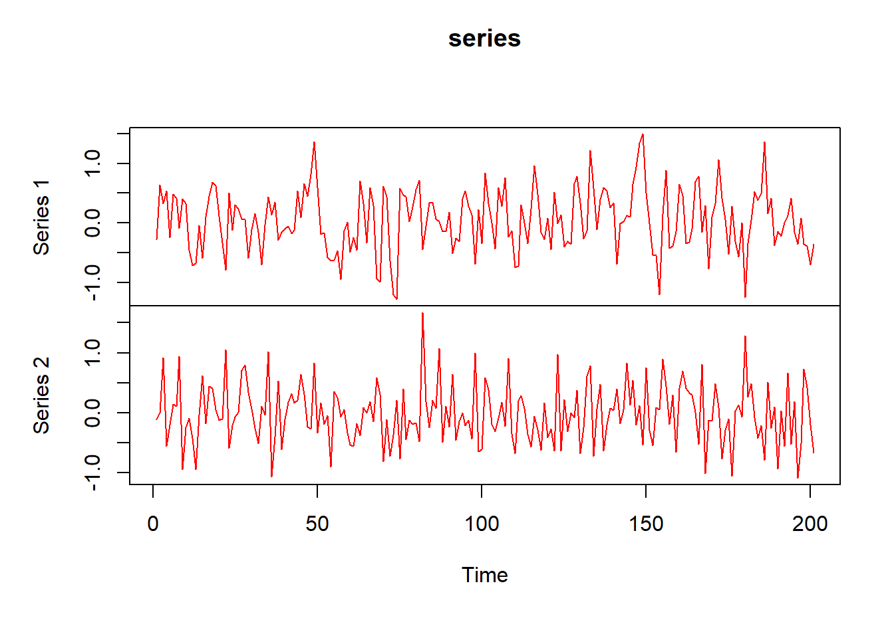
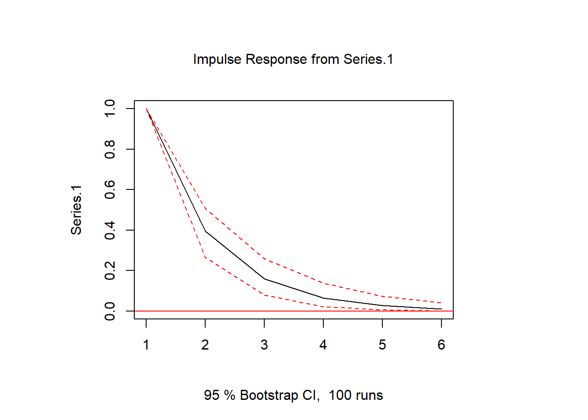
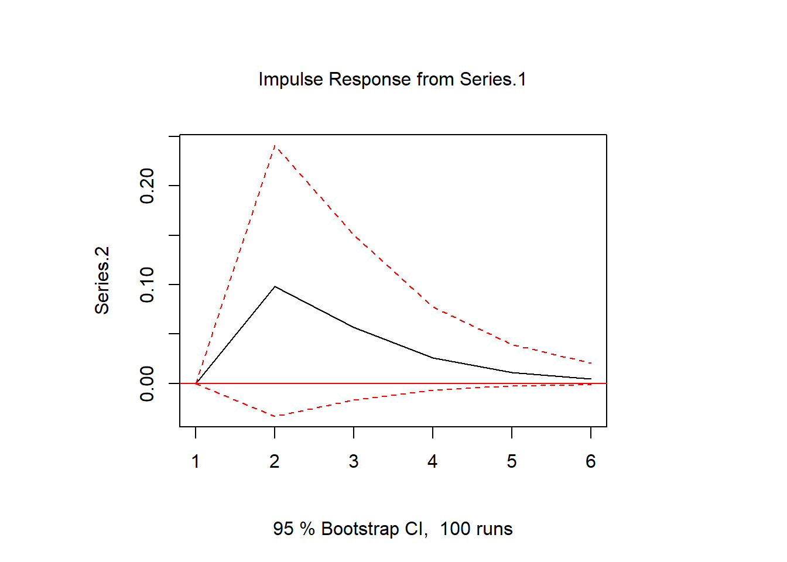
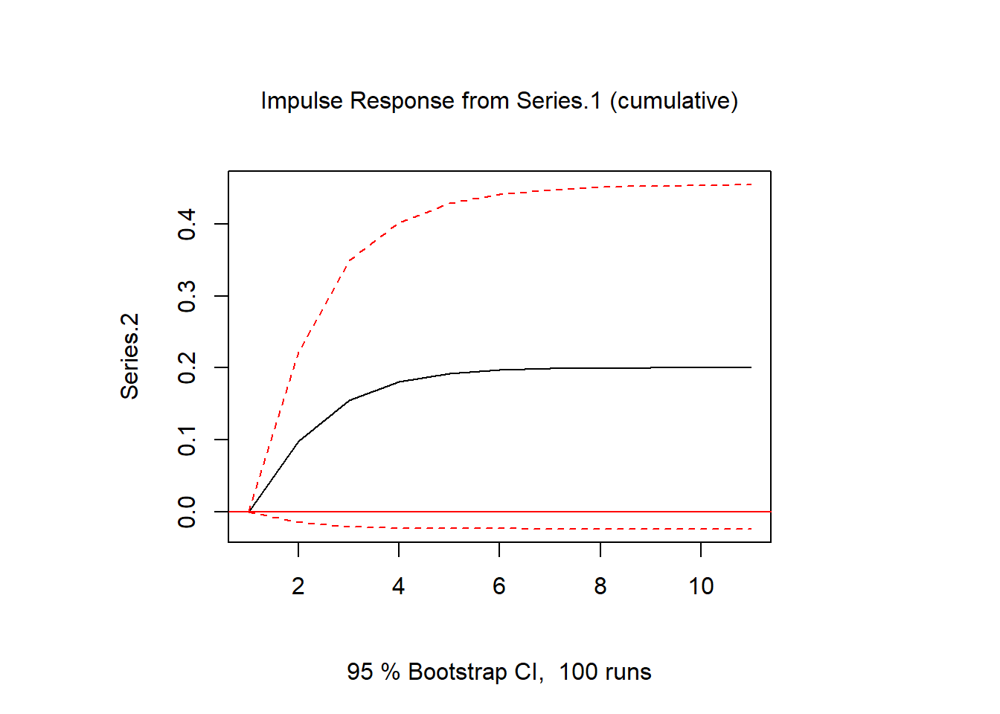

knitr::opts_chunk$set(echo = TRUE)A Notebook on VAR Models: Wold Representation, Impulse Response Functions and Identification
VAR
time series
macroeconometrics
impulse response
R
Lecture-style notes deriving the vector moving average (Wold) representation of a VAR, structural identification via Cholesky decomposition, and impulse response functions, with worked examples in R using the vars package.
Consider the following bivariate VAR representation
\[ y_t = \mu + \Gamma y_{t-1} + \epsilon_t \]
where yt = [y1,t , y2,t] , µ = [µ1, µ2] , Γ is a 2-by-2 matrix with generic element γij , and ε = [ε1, ε2] with εt ∼ N(0, Σ),that is, ε1 and ε2 are potentially correlated. • For simplicity, we have assumed the existence of only one lag in (16). • The system is also assumed to be covariance stationary.
The vector moving average (VMA) representation (or Wold representation) of the VAR in builds on an infinite moving average of innovations \(\varepsilon_t\)
\[ \begin{aligned} y_t &= \mu + \Gamma y_{t-1} + \varepsilon_t \\ (1-\Gamma L)y_t &= \mu + \varepsilon_t \\ y_t &= (1-\Gamma L)^{-1} + (1-\Gamma L)^{-1}\varepsilon_t\\ y_t &= \tilde{\mu} + \Phi(L) \varepsilon_t \end{aligned} \] Notice we have expressed \[(1-\Gamma L)^{-1} \rightarrow \Phi(L)\]
- Why is it? Geometric sums with matrices
-
Consider the following sum \(\sum_{j=0}^J Y^j\) , if we can assume \(J \rightarrow \infty\) we could say:
\[ \begin{aligned} S_j &= \sum_{j=0}^J Y^j = 1 + Y + Y^2 + Y^3 ... + Y^J \quad(1) \\ YS_j &= Y + Y^2 + Y^3 ... + Y^{J+1} \quad(2) \\ (1) - (2) \rightarrow (1-Y)S_j&=(1 + Y + Y^2 + Y^3 ... + Y^J ) -( Y + Y^2 + Y^3 ... + Y^{J+1}) \\ S_j &= \frac{1-Y^{J+1}}{1-Y} \quad if \quad Y \in (-1,1) \quad S_\infty = \frac{1}{1-Y} \end{aligned} \]
Notice the trick we have used to get ride of \(Y^{J+1}\) is because we have conditional \(-1<Y<1\) so the term tends to zero. When we are dealing with matrices this is the same as saying \(\vert eig(Y)\vert<1\) and the solution to the geometric sum of matrices would be \(S_\infty = (I-Y)^{-1}\). In other words, If all eigenvalues of Y have modulus less than 1, the sequence is absolutely summable.
Now is easier to understand why:
\[ \Phi(L) = \sum_{k=0}^\infty \Phi_kL^k= \Phi_o +\Phi_1 L+\Phi_2 L^2 +\Phi_3 L^3 +... =I+ \Gamma L+\Gamma^2 L^2 + \Gamma^3 L^3 + ... = (I-\Gamma L)^{-1} \]
This result can be also obtained following a slight different approach.
\[ \begin{aligned} y_1 &= \mu + \Gamma_1 y_{0} + \varepsilon_1 \\ y_2 &= \mu + \Gamma_1 y_{1} + \varepsilon_2 = \mu + \Gamma_1(\mu + \Gamma_1 y_{0} + \varepsilon_1) + \varepsilon_2\\ &=(I_k+\Gamma_1)\mu + \Gamma_1^2y_0+ \Gamma_1\varepsilon_1 +\varepsilon_2 \\ y_3&=\mu + \Gamma_1 y_{2} + \varepsilon_3 = \mu + \Gamma_1 [(I_k+\Gamma_1)\mu + \Gamma_1^2y_0+ \Gamma_1\varepsilon_1 +\varepsilon_2] + \varepsilon_3 \\ &= \mu + \Gamma_1\mu + \Gamma1^2\mu + \Gamma_1^3yo + \Gamma_1^2\varepsilon_1 +\Gamma_1\varepsilon_2 + \varepsilon_3\\ ... \\ y_t &= (I_k + \Gamma_1 + \Gamma_1^2 + ...+\Gamma_1^{t-1})\mu + \Gamma_1^ty_0 +\sum_{i=o}^{t-1}\Gamma_1^i \varepsilon_{t-i} \end{aligned} \]
Again, if all eigenvalues of \(\Gamma_1\) have modulus less than 1 the sequence is is absolutely summable and the infinite sum exists in mean square. Furthermore, we can express the process above as:
\[ y_t = \tilde{\mu} + \sum_{i=o}^{\infty}\Gamma_1^i \varepsilon_{t-i} = \tilde{\mu} + \Phi(L) \varepsilon_t \]
This form of the process is called the moving average (MA) representation, where Yt is expressed in terms of past and present error or innovation vectors Ut and the mean term
It is also worth to dig a little bit further to know if the process we are representing is an stable one. If we figure a VAR(1) process, the stability condition for the eigenvalues can be expressed as:
\[ det(I_k - \Gamma z) \neq 0 \quad for \quad \vert z \vert <1 \]
If we have a VAR(1) model such as:
We can show that this model is stable/ stationary with:
# Find roots of equation: 1 - 0.9 * z + 0.18 * z^2 = 0
roots <- polyroot(c(1, -0.9, 0.18))
paste0("Absolute: |z_i| = ", round(abs(roots), 2))[1] "Absolute: |z_i| = 1.67" "Absolute: |z_i| = 3.33"Because the roots are greater than one in absolute value (lie outside the unit root circle), the VAR(1) process is stationary.
Nevertheless we can also perform and eyeballing test to make sure the process described above looks stationary/stable.
set.seed(123) # Reset random number generator for reasons of reproducability
# Generate sample
t <- 200 # Number of time series observations
k <- 2 # Number of endogenous variables
p <- 1 # Number of lags
# Generate coefficient matrices
A.1 <- matrix(c(.4, .1, .2, .05), k) # Coefficient matrix of lag 1
#A.2 <- matrix(c(-.1, -.2, .1, .05), k) # Coefficient matrix of lag 2
#A <- cbind(A.1, A.2) # Companion form of the coefficient matrices
# Generate series
series <- matrix(0, k, t + 2*p) # Raw series with zeros
for (i in (p + 1):(t + 2*p)){ # Generate series with e ~ N(0,0.5)
series[, i] <- A.1%*%series[, i-1] + rnorm(k, 0, 0.5)
}
series <- ts(t(series[, -(1:p)])) # Convert to time series format
plot.ts(series, col="red") # Plot the series
1 Structural Innovations
We have defined \(\varepsilon_t\) as the vector of structural innovations. We would like them to be un correlated with each other in each period of time. In other words we would like them to be:
\[ \varepsilon_t \sim N(0, I) \]
What is \(I\) in this context? The formula for the variance of a univariate time series
\(x = [x_1, x_2,..,x_T]\) is
\[ VAR = \sum_{t=0}^T \frac{(x_t- \bar{x})^2}{N} = \sum_{t=0}^T \frac{(x_t- \bar{x})(x_t- \bar{x})}{N} \]
If we have a bivariate time series:
\[ z = \begin{bmatrix} x_1 & x_2 & ... x_T\\y_1 & y_2 & ... y_T\end{bmatrix} \]
Then the formula becomes:
\[ VCV = \begin{bmatrix} \sum_{t=0}^T \frac{(x_t- \bar{x})(x_t- \bar{x})}{N} & \sum_{t=0}^T \frac{(x_t- \bar{x})(y_t- \bar{y})}{N} \\ \sum_{t=0}^T \frac{(y_t- \bar{y})(x_t- \bar{x})}{N} & \sum_{t=0}^T \frac{(y_t- \bar{y})(y_t- \bar{y})}{N} \end{bmatrix} = \begin{bmatrix} VAR(x) &COV(x,y) \\ COV(y,x) & VAR(y) \end{bmatrix} \]
Therefore we would like \(I\) to be in the bivariate VAR example \(\begin{bmatrix} 1 &0\\0&1\end{bmatrix}\)
Nevertheless, this would not be often the case. If the variance covariance matrix (VCV) has elements different to zero off the diagonal it would mean that there is a contemporaneous correlation between innovations. It means that we would not be able to disentangle the effect of a shock to one variable since it affects to both vaiables.
We would like to transform \(\varepsilon_t \sim (0, \Sigma)\) to a set of uncorrelated$$ components \(u_t\) according to: \[ \varepsilon_t = \Omega u_t \quad where \quad u_t \sim N(0, I) \]
Where \(\Omega\) is an invertible square matrix with generic elements \(\omega_{i,j}\)
\[ \Sigma = \frac{1}{n}\sum_t \varepsilon_t \varepsilon_t' = \Omega(\frac{1}{n}\sum_t u_t u_t')\Omega' = \Omega\Omega' \]
The problem is that while \(\Sigma\) has three parameter, the matrix \(\Omega\) has four, naturally there are many such a matrices. Note:
\[ \Sigma = \begin{bmatrix} \sigma_{1,1} &\sigma_{1,2}\\\sigma_{2,1}&\sigma_{2,2}\end{bmatrix} \]
Where by symetry we could express:
\[ \Sigma = \begin{bmatrix} \sigma_{1,1} &\tau\\ \tau&\sigma_{2,2}\end{bmatrix} \]
While our matrix
\[ \Omega = \begin{bmatrix} \omega_{1,1} &\omega_{1,2}\\\omega_{2,1}&\omega_{2,2}\end{bmatrix} \quad \Omega'=\begin{bmatrix} \omega_{1,1} &\omega_{2,1}\\\omega_{1,2}&\omega_{2,2}\end{bmatrix} \]
Therefore, \(\Sigma = \Omega\Omega'\) becomes a system of thee (different) equations and four unknowns because the second and third equation are the same.
\[ \begin{aligned} \sigma_{1,1} &= \omega{1,2}^2 +\omega_{2,1}^2 \\ \tau &= \omega_{1,1}\omega_{2,1} + \omega_{1,2}\omega_{2,2} \\ \tau &= \omega_{1,1}\omega_{2,1} + \omega_{1,2}\omega_{2,2} \\ \sigma_{2,2} &= \omega{2,1}^2 +\omega_{2,2}^2 \\ \end{aligned} \]
So we have four unknowns: \(\omega_{1,1}, \omega_{1,2}, \omega_{2,1}\),\(\omega_{2,2}\) and it implies that there are infinite solutions to the problem. Therefore an identification strategy is needed to fin a solution. For the moment let’s assume we have find a viable identification strategy and our error is:
\[ \varepsilon_t = \Omega u_t \quad where \quad u_t \sim N(0, I) \]
2 Structural VMA representation
The structural VMA representation is:
\[ y_t = \tilde{\mu} + \Theta(L)u_t \]
Where: \(\Theta = \Phi(L) \Omega\) and
\[ \Theta(L) = \sum_{k=0}^\infty \Theta_kL^k= \Theta_o +\Theta_1 L+\Theta_2 L^2 +\Theta_3 L^3 +... \]
With \(\Theta_k = \Phi_k\Omega\) for all k. Note then that \(\Theta_0 = \Phi_o\Omega=I\Omega = \Omega\)
Why is it called structural VMA. The equation of a structural VAR or VMA define the structure of the economy. This is because is we have that \(u_t \sim N(0, I)\) we can interpretet \(u_t\) as structural shocks.
Explicitly for the bivariate VAR case the VMA representation is
\[ \begin{aligned}\begin{bmatrix} y_{1,t}\\y_{1,t}\end{bmatrix} = \begin{bmatrix} \tilde{\mu}_{1}\\\tilde{\mu}_{1} \end{bmatrix}+\Theta_0\begin{bmatrix} u_{1,t}\\u_{1,t}\end{bmatrix} = \begin{bmatrix} \tilde{\mu}_{1}\\\tilde{\mu}_{1} \end{bmatrix}+\sum_{s=0}^{\infty}\begin{bmatrix} \theta_{1,1}^{(0)} &\theta_{1,2}^{(0)}\\ \theta_{2,1}^{(0)} & \theta_{2,2}^{(0)} \end{bmatrix}^t\begin{bmatrix} u_{1,t-s}\\u_{1,t-s}\end{bmatrix} \end{aligned} \]
\[ \begin{aligned} \begin{bmatrix} y_{1,t}\\y_{1,t}\end{bmatrix} = \begin{bmatrix} \tilde{\mu}_{1}\\\tilde{\mu}_{1} \end{bmatrix}+ \Theta_0\begin{bmatrix} u_{1,t}\\u_{1,t}\end{bmatrix} + \Theta_1L\begin{bmatrix} u_{1,t}\\u_{1,t}\end{bmatrix}+ \Theta_2L^2\begin{bmatrix} u_{1,t}\\u_{1,t}\end{bmatrix}+... \\ =\begin{bmatrix} \tilde{\mu}_{1}\\\tilde{\mu}_{1} \end{bmatrix}+ \Theta_0\begin{bmatrix} u_{1,t}\\u_{1,t}\end{bmatrix} + \Theta_1\begin{bmatrix} u_{1,t-1}\\u_{1,t-1}\end{bmatrix}+ \Theta_2\begin{bmatrix} u_{1,t-2}\\u_{1,t-2}\end{bmatrix}+... \end{aligned} \]
That is:
\[ \begin{aligned}\begin{bmatrix} y_{1,t}\\y_{1,t}\end{bmatrix} =\begin{bmatrix} \tilde{\mu}_{1}\\\tilde{\mu}_{1} \end{bmatrix}+\begin{bmatrix} \theta_{1,1}^{(0)} &\theta_{1,2}^{(0)}\\ \theta_{2,1}^{(0)} & \theta_{2,2}^{(0)} \end{bmatrix}\begin{bmatrix} u_{1,t}\\u_{1,t}\end{bmatrix} +\begin{bmatrix} \theta_{1,1}^{(1)} &\theta_{1,2}^{(1)}\\ \theta_{2,1}^{(1)} & \theta_{2,2}^{(1)} \end{bmatrix}\begin{bmatrix} u_{1,t-1}\\u_{1,t-1}\end{bmatrix}+ ….\end{aligned} \]
Note that the \(\Theta\)’s do not depend on time t. The \(\Theta\)’s depend on the distance between t and a corresponding lagged period
Then, at any time t + s the structural VMA representation is
\[\begin{aligned} \begin{bmatrix} y_{1,t+s}\\y_{1,t+s}\end{bmatrix} &= \begin{bmatrix} \tilde{\mu}_{1}\\\tilde{\mu}_{1} \end{bmatrix}+ \Theta_0\begin{bmatrix} u_{1,t+s}\\u_{1,t+s}\end{bmatrix} + \Theta_1L\begin{bmatrix} u_{1,t+s}\\u_{1,t+s}\end{bmatrix}+ \Theta_2L^2\begin{bmatrix} u_{1,t+s}\\u_{1,t+s}\end{bmatrix}+... \\ &=\begin{bmatrix} \tilde{\mu}_{1}\\\tilde{\mu}_{1} \end{bmatrix}+ \Theta_0\begin{bmatrix} u_{1,t+s}\\u_{1,t+s}\end{bmatrix} + ...+ \Theta_s\begin{bmatrix} u_{1,t}\\u_{1,t}\end{bmatrix}+... \end{aligned}\]
That is:
\[ \begin{aligned}\begin{bmatrix} y_{2,t}\\y_{2,t+S}\end{bmatrix} =\begin{bmatrix} \tilde{\mu}_{1}\\\tilde{\mu}_{2} \end{bmatrix}+\begin{bmatrix} \theta_{1,1}^{(0)} &\theta_{1,2}^{(0)}\\ \theta_{2,1}^{(0)} & \theta_{2,2}^{(0)} \end{bmatrix}\begin{bmatrix} u_{1,t+s}\\u_{1,t+s}\end{bmatrix} +…+\begin{bmatrix} \theta_{1,1}^{(s)} &\theta_{1,2}^{(s)}\\ \theta_{2,1}^{(s)} & \theta_{2,2}^{(s)} \end{bmatrix}\begin{bmatrix} u_{1,t}\\u_{1,t}\end{bmatrix}+ ….\end{aligned} \]
Remark 1. The effect of any current innovation \(u_t\) on any future \(y_t\) at period \(t+s\) is given by \(\Theta_s\)
Remark 2. The contemporaneous effect of any current innovation \(u_t\) on any current \(y_t\) is given by \(\Theta_s\).
We define the dynamic multipliers as the response at \(t+s\) of a variable \(y_i\) (i.e.,\(y_{i, t+s}\)) to a shock \(u_j\)that happened at time \(t\), \(u_{j,t}\) . • The dynamic multipliers are
3 Impulse response functions
Impulse response functions (IR) answer the question What is the response of current and future values of each of the variables to a one-unit increase in the current value of one of the structural errors, assuming that this error returns to zero in subsequent periods and that all other errors are equal to zero The implied thought experiment of changing one error while holding the others constant makes sense only when the errors are uncorrelated across equations
• IRFs describe the response at each period t + s, for all s > 0, of variable yit+s to a shock ujt that happens at time t. • That is, IRFs are defined by the sequence of dynamic multipliers n θ (s) ij o .
Let’s see it with an example. We assume we have two variables and we are interested to analyze the effect of on a variable in a bivariate system. To isolate such an effect, suppose that both variables assume their mean value prior to time t=0, \(y_t = \mu\) and the first variable increases by one unit in period t = 0, that is, \(\varepsilon_{1,0}=1\). Now we can can trace out what happens to the system during periods t = 1, 2,… if no further shocks occur. Because we are not interested in the mean of the system in such an exercise but just in the variations of the variables around their means, we assume that all three variables have mean zero and set \(\mu=0\). Hence, \(y_t = \Gamma y_t + \varepsilon_t\) or, in matrix form:
\[ \begin{aligned} \begin{bmatrix} y_{1,t}\\y_{2,t}\end{bmatrix} = \begin{bmatrix}.5 &0 \\ .1 & .1 \end{bmatrix} \begin{bmatrix} y_{1,t-1}\\y_{2,t-1}\end{bmatrix} + \begin{bmatrix} u_{1,t}\\u_{2,t}\end{bmatrix} \end{aligned} \] Tracing a unit shock in the first variable in period t = 0 in this system we get
\[ \begin{aligned} y_0= \begin{bmatrix} y_{1,0}\\y_{2,0}\end{bmatrix} = \begin{bmatrix} u_{1,0}\\u_{2,0}\end{bmatrix} = \begin{bmatrix} 1\\0\end{bmatrix} \end{aligned} \]
\[ \begin{aligned}y_1=\begin{bmatrix} y_{1,1}\\y_{2,1}\end{bmatrix} = \Gamma_1y_0 =\begin{bmatrix} .5\\.1\end{bmatrix}\end{aligned} \]
\[ \begin{aligned}y_2=\begin{bmatrix} y_{1,2}\\y_{2,2}\end{bmatrix} = \Gamma_1y_1 = \Gamma_1^2y_0=\begin{bmatrix} .25\\.6\end{bmatrix}\end{aligned} \]
\[ \begin{aligned}y_3=\begin{bmatrix} y_{1,3}\\y_{2,3}\end{bmatrix} = \Gamma_1y_2 = \Gamma_1^3y_0=\begin{bmatrix} .125 \\.031\end{bmatrix}\end{aligned} \]
\[ \begin{aligned}y_4=\begin{bmatrix} y_{1,4}\\y_{2,4}\end{bmatrix} = \Gamma_1y_3 = \Gamma_1^4y_0=\begin{bmatrix} .062 \\.015\end{bmatrix}\end{aligned} \]
Continuing the procedure, it turns out that \(y_i= (y_{1,i}, y_{2,i})'\) is just the power of the matrix of coefficients times the unit shock. As it it is the effect of these unit shocks in the the variables of the system after i periods they are called impulse responses or dynamic multipliers. Following the above series we can see that the impact of the unit shock to the first variable is a decay following the sequence 1, 0.5, 0.25, 0.12, 0.06 meanwhile the second variable has a hump shaped trajectory following the sequence 0, 0.1, 0.06, 0.03, 0.01 and so on. Let’s see how these results compare when we feed the machine with some numbers.
suppressMessages(library(vars)) # Load packageWarning: package 'vars' was built under R version 4.5.3Warning: package 'strucchange' was built under R version 4.5.3Warning: package 'zoo' was built under R version 4.5.2Warning: package 'sandwich' was built under R version 4.5.2Warning: package 'urca' was built under R version 4.5.3Warning: package 'lmtest' was built under R version 4.5.3set.seed(3)
A.1 <- matrix(c(.5, .1, 0, .1), k) # Coefficient matrix of lag 1
# Generate series
series <- matrix(0, k, t + 2*p) # Raw series with zeros
for (i in (p + 1):(t + 2*p)){ # Generate series with e ~ N(0,0.5)
series[, i] <- A.1%*%series[, i-1] + rnorm(k, 0, 0.001)
}
series <- ts(t(series[, -(1:p)])) # Convert to time series format
var.1 <- VAR(series, p = 1, type = "none") # Estimate the model
ir.2 <- irf(var.1, impulse = "Series.1", response = "Series.2", n.ahead = 5, ortho = F)
ir.1 <- irf(var.1, impulse = "Series.1", response = "Series.1", n.ahead = 5, ortho = F)
plot(ir.1)
plot(ir.2)
A problematic assumption in this type of impulse response analysis is that a shock occurs only in one variable at a time. Such an assumption may be reasonable if the shocks in different variables are independent. If they are not independent one may argue that the error terms consist of all the influences and variables that are not directly included in the set of y variables. Thus, in addition to forces that affect all the variables, there may be forces that affect variable 1, say, only.
On the other hand, correlation of the error terms may indicate that a shock in one variable is likely to be accompanied by a shock in another variable. In that case, setting all other residuals to zero may provide a misleading picture of the actual dynamic relationships between the variables.
var.1 <- VAR(series, p = 1, type = "none") # Estimate the model
model_summary <- summary(var.1)
# Obtain variance-covariance matrix
round(model_summary$covres,10) Series.1 Series.2
Series.1 9.577e-07 -1.0310e-07
Series.2 -1.031e-07 1.0813e-06Since the off-diagonal elements of the estimated variance-covariance matrix are not zero, we can assume that there is contemporaneous correlation between the variables in the VAR model. This is confirmed by the correlation matrix, which corresponds to \(\Sigma\)
round(model_summary$corres,4) Series.1 Series.2
Series.1 1.0000 -0.1014
Series.2 -0.1014 1.0000However, those matrices only describe the correlation between the errors, but it remains unclear in which direction the causalities go. Identifying these causal relationships is one of the main challenges of any VAR analysis.
4 What is the impact in the long run?
Since yt is assumed covariance stationary, then the limiting dynamic multiplier is
That is, shocks to uj have no long-run impact on the level of yi . In other terms, the response of yit+s in the long-run to shocks ujt at time t is zero. The reason is that yt (we have assumed) is covariance stationary.
4.1 What is the cumulative impact in the long run?
Now, there is a legit question. He have seen the impact of one variable on another variable at a moment t+s. However, what is the cumulative impact in the long run? Apparently the answer to this questions is just to add all the all these impulses over time.
The cumulative impact of \(u_j\) on \(y_i\) in the long-run is given by
\[ \begin{aligned} \Theta(1)=\begin{bmatrix} \theta_{1,1}{(1)} &\theta_{1,2}{(1)}\\ \theta_{2,1}{(1)} & \theta_{2,2}{(1)} \end{bmatrix} = \begin{bmatrix} \sum_{s=0}^\infty \theta_{1,1}^{(s)} & \sum_{s=0}^\infty \theta_{1,2}^{(s)}\\ \sum_{s=0}^\infty \theta_{2,1}^{(s)} &\sum_{s=0}^\infty \theta_{2,2}^{(s)} \end{bmatrix}\end{aligned} \]
Where we not that:
\[ \Theta(1) = \sum_{k=0}^\infty\Theta_k(L=1)^k= \Theta_0 + \Theta_1 + \Theta_2 + \Theta_3 ...\]
That is, the cumulative impact of \(u_j\) on \(y_i\) in the long-run is the infinite sum of dynamic multipliers.
In our example when we add up the IR from the first variable we add a sequence like \(0, 0.1, 0.06,0.03, 0.0015 ...\) adding up this sequence we have that it converges to a value close to 0.22. Again, this can be expressed with the trick we learned summing up the terms of the \(\Gamma^iu_o\)
library(expm) #To use matrix exponents Warning: package 'expm' was built under R version 4.5.3Cargando paquete requerido: Matrix
Adjuntando el paquete: 'expm'The following object is masked from 'package:Matrix':
expmGamma <- matrix(c(.5,.1,0, .1 ), nrow=2, ncol = 2)
u <- matrix(c(1,0), nrow=2, ncol = 1)
CRF = 0
for (i in 0:10)
{
CRF = CRF + Gamma%^%i %*% u
}
round(CRF,2) [,1]
[1,] 2.00
[2,] 0.22Just to make ourselves sure, we can plot the cumulative IRF as it is defined by default in the VARs pacakge using cumulative = TRUE
# Calculate impulse response
ir.2 <- irf(var.1,impulse="Series.1",response="Series.2",n.ahead = 10,ortho = FALSE,cumulative = TRUE)
# Plot
plot(ir.2)
5 Forecast Error
Forecast error is the difference between the actual value of
6 Forecast Error Variance Decomposition
7 Identification Strategy
Short-run restrictions are associated with contemporaneous effects and, therefore, are implemented on \(\Theta_0\). A famous example is Stock & Watson (2001). “Vector Autoregressions,” Journal of Economic Perspectives. For instance, the restriction imposed below implies that \(u_{2,t}\) has no contemporaneous effect on \(y_{1,t}\) that is:
\[ \begin{aligned} \Theta(1)=\begin{bmatrix} \theta_{1,1}^{(0)} &0\\ \theta_{2,1}^{(0)} & \theta_{2,2}^{(0)} \end{bmatrix} \end{aligned} \]
Long-run restrictions are associated with the cumulative long-run effects and, therefore, are implemented on \(\Theta(1)\). A famous example is Blanchard & Quah (1989). “The Dynamic Effects of Aggregate Demand and Supply Disturbances”, American Economic Review. For example, the restriction imposed below implies that \(u_{2,t}\) has no cumulative effect on \(y_{1,t}\) that is the upper triangular has a zero in its entry.
\[ \begin{aligned} \Theta(1)=\begin{bmatrix} \theta_{1,1}{(1)} &0\\ \theta_{2,1}{(1)} & \theta_{2,2}{(1)} \end{bmatrix} = \begin{bmatrix} \sum_{s=0}^\infty \theta_{1,1}^{(s)} & 0\\ \sum_{s=0}^\infty \theta_{2,1}^{(s)} &\sum_{s=0}^\infty \theta_{2,2}^{(s)} \end{bmatrix}\end{aligned} \]